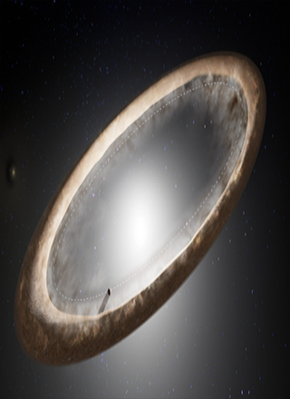
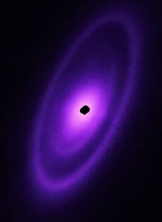
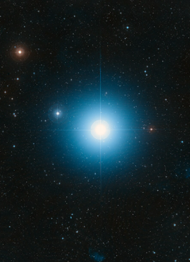
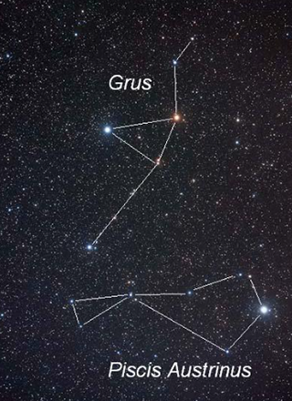

estrella más brillante de la constelación del Pez Austral y una de las más luminosas del cielo nocturno..
El dia que tu naciste una estrella empezo a brillar hoy quedara por siempre con tu nombre por que eres luz, magia, inolvidable e irremplazable.
Ascensión Recta (AR): 22h 57m 39s y Declinación (Dec): -29° 37′ 19″ (en la época J2000)..
Tiene una masa y un diámetro mayores que los de nuestro Sol (unas 2,3 veces su masa) y brilla con una luminosidad casi 18 veces superior.
Fomalhaut es considerada una de las estrellas más importantes para la astronomía moderna porque funciona como un laboratorio natural para entender cómo nacen y evolucionan los sistemas planetarios.